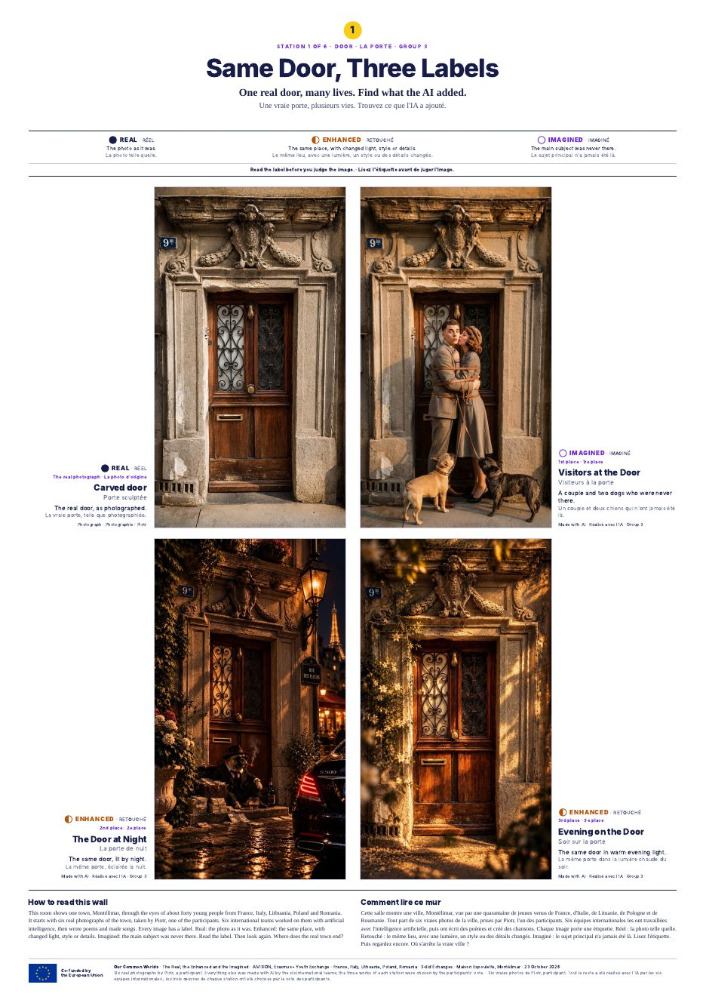
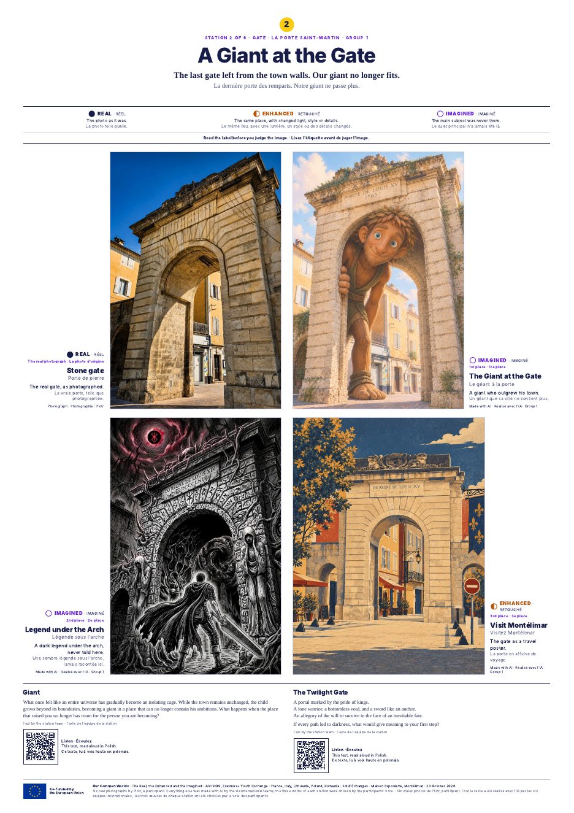
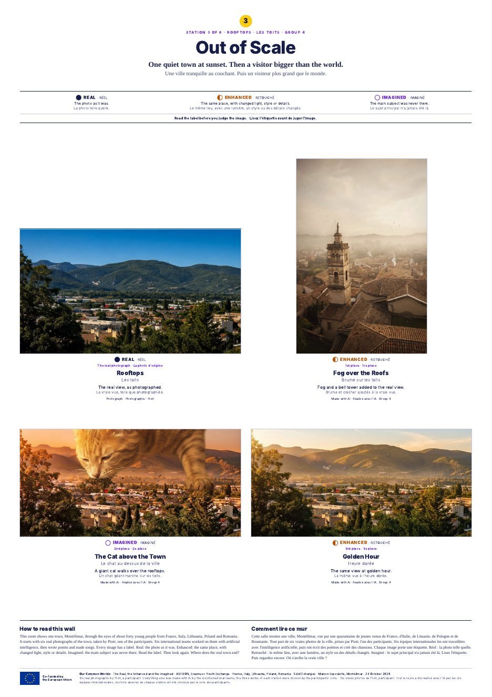
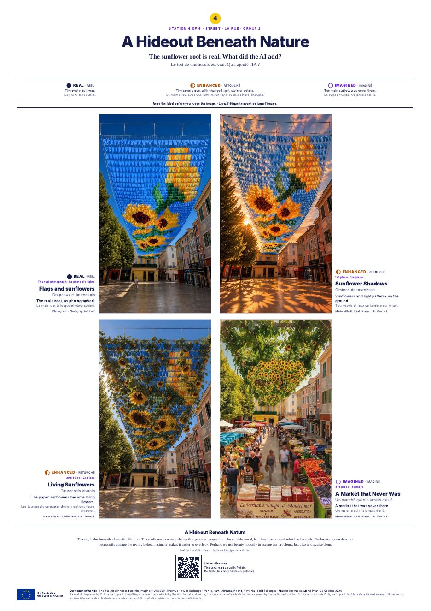
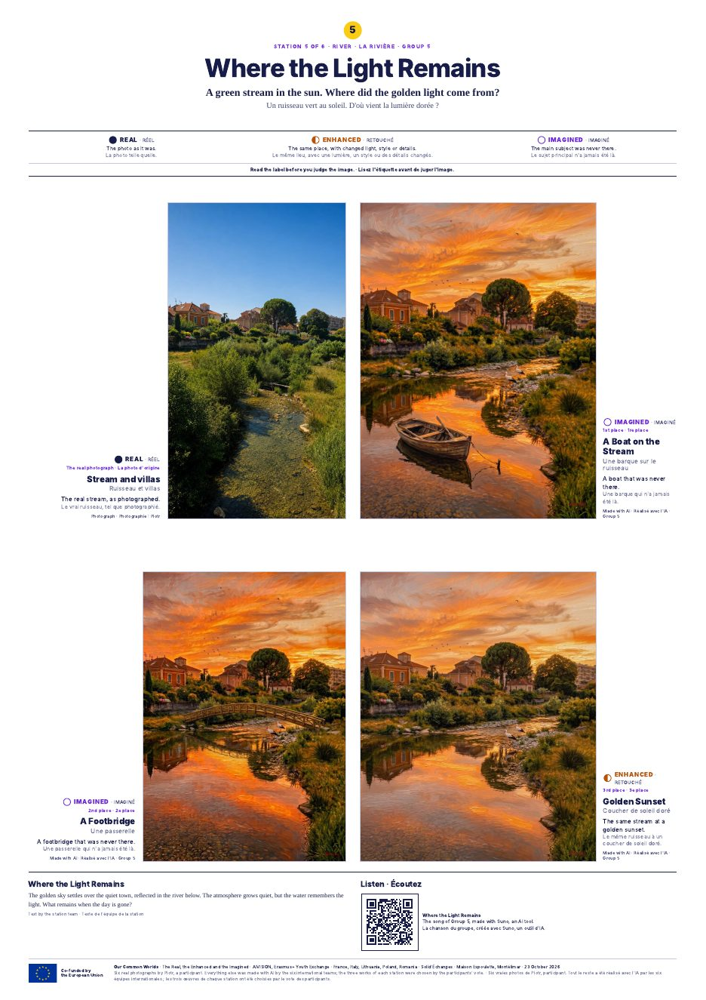
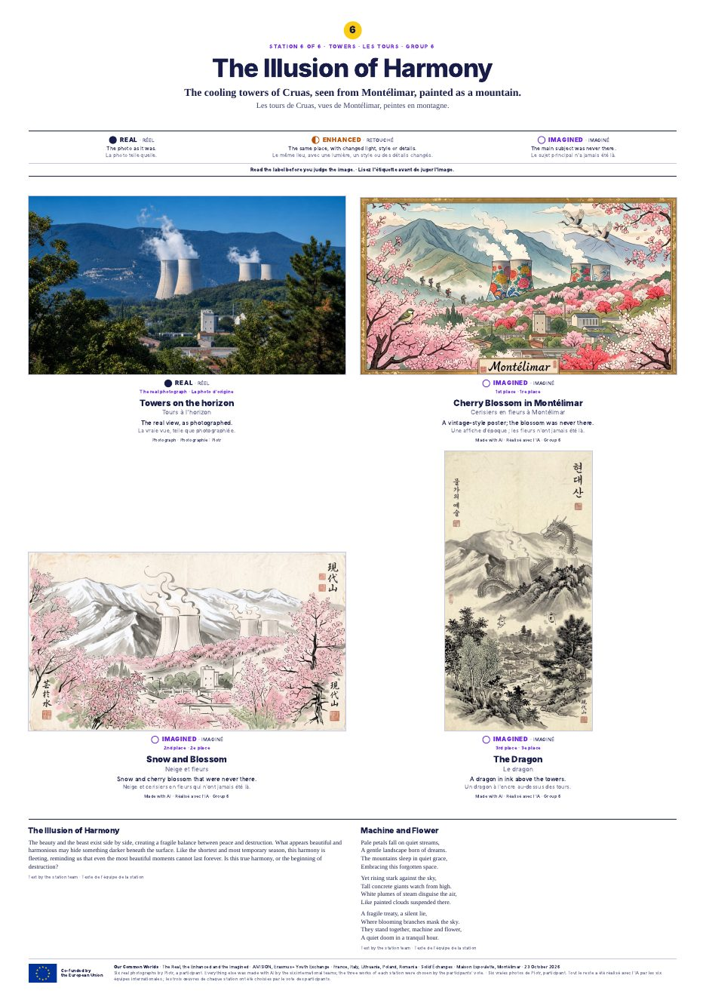

AIVISION · Exposition · 6 feuilles A1 à imprimer
Version 2, 22 octobre 13 h. Tout tient en six feuilles A1 (594 × 841 mm, portrait), une par station. Chaque feuille contient : le titre, la photographie d'origine, les trois images choisies par le vote, leur étiquette (Réel, Retouché, Imaginé), leur description, le poème et les codes QR vérifiés. Il n'y a rien d'autre à imprimer.
Les six fichiers, un par feuille
- A1_station_1_Door.pdf · Station 1 · La porte (7 Mo)
- A1_station_2_Gate.pdf · Station 2 · La porte Saint-Martin (9 Mo)
- A1_station_3_Rooftops.pdf · Station 3 · Les toits (6 Mo)
- A1_station_4_Street.pdf · Station 4 · La rue (7 Mo)
- A1_station_5_River.pdf · Station 5 · La rivière (8 Mo)
- A1_station_6_Towers.pdf · Station 6 · Les tours (6 Mo)
Les six en un seul PDF de six pages : AIVISION_A1_six_stations.pdf (39 Mo)
Aperçus






Technique
- Format de page A1 exact, fond perdu inutile : marges blanches de 22 mm sur les côtés, 20 mm en haut, 16 mm en bas.
- Images agrandies par réseau de neurones (LapSRN), placées entre 125 et 270 mm de large, à 280 dpi ou plus à la taille d'impression. Résolution native limitée : rendu doux à 30 cm, net à 1 m.
- Textes vectoriels, polices incorporées. Codes QR vectoriels, lus et vérifiés : chaque code ouvre le lien prévu.
- Papier mat de préférence, salle très vitrée. Support rigide léger si possible (carton plume), sinon papier fort.
- Accrochage sur grilles métalliques (photo ci-dessous), adhésif double face ou pinces.
Plan_de_salle.pdf · Grille_photo.jpg
Contact : David Dabert, +33 7 66 25 10 25 · Solid'Échanges, Flor Lusson, +33 7 81 59 80 90